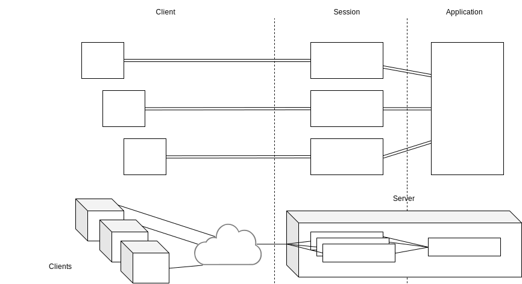

Creating Server Counters
Next we extend the client counter example to compute on the server, we will have to variants: a private and a shared counter.
Objectives
- Learn the concept of Tiers, more specifically the
Client,SessionandApptiers - Communicate between tiers using replication primitives such as
.toSession
Tiers

Gavial programs are written in a three-tier-system. The client tier corresponds to all code that is run in the browser on the client and for one application there are conceptually multiple clients alive all running the client-tier code. The server consists of two tiers, a session tier and an application tier. A session tier is the client tier’s server counterpart and for each conceptual instance of the client tier there is a corresponding session instance. The session tier is used to execute client-specific code on the server. The application tier on the other hand is shared, there is only one instance of the application tier.
In Gavial FRP primitives are expressed in the form of TierPrimitive, e.g., ClientEvent or Tier#Primitive, e.g., SessionTier#DBehavior.
Creating a Private (server) Counter
We start from the client counter example and re-define state to be executed on the server:
val sessionState = ClientEvent.toSession(counterSource).fold(0)(_ + _)
// sessionState: SessionTier#DBehavior[Int] = mtfrp.core.SessionDBehavior@65eabb74
val state = SessionDBehavior.toClient(sessionState)
// state: ClientDBehavior[Int] = mtfrp.core.ClientDBehavior@5110b41
We use two replication primitives (.toSession and .toClient) to convert between tiers.
First the counter events are brought to the server on the session tier after which they are folded in the same way as before.
The new sessionState contains the counter state on the server for each specific client separately and is just as easily replicated to the client with the .toClient primitive completing the new server-side definition of state. All other code (ui, etc.) remains unchanged.
Note that
Creating a Shared Counter
To create a shared counter we once again redefine how the counter is folded. The behavior of this example should be that several clients at once share the same counter and see the same state. Whenever a client adds to subtracts from the counter, all other clients immediately see the changes.
val appState = SessionEvent.toApp(ClientEvent.toSession(counterSource)).fold(0)(_ + _.values.sum)
// appState: AppTier#DBehavior[Int] = mtfrp.core.AppDBehavior@5919b6be
val state = SessionDBehavior.toClient(AppDBehavior.toSession(appState))
// state: ClientDBehavior[Int] = mtfrp.core.ClientDBehavior@66fdf6b4
This time we define appState, state computed on the App tier by going from client to session to application.
Note that going from the session tier to the application tier involves multiplicity, that is, SessionEvent.toApp in this case does not return an event of integers but a AppEvent[Map[Client, Int]] where Client corresponds to a client connection.
We define appState by ignoring all keys and simply summing all values.
The final state definition is similar to before and the application state is replicated to the client tier across the session tier.
Multiplicity here has broadcast semantics by default — all updates are sent to all clients.
The final result shown below is an implementation of a websocket-backed counter that automatically propagates changes (through the application tier) to all connected clients.
import mtfrp.core._
import UI.html.all._
object HelloApp extends GavialApp {
val port = 8080
val host = "localhost"
val headExtensions = List(script(src := s"hello-fastopt-bundle.js"))
val counterSource = ClientEvent.source[Int]
val appState = SessionEvent.toApp(ClientEvent.toSession(counterSource)).fold(0)(_ + _.values.sum)
val state = SessionDBehavior.toClient(AppDBehavior.toSession(appState))
val ui = state.map { c =>
div(h1("Count!"),
button("+", UI.listen(onclick, counterSource)(_ => 1)),
button("-", UI.listen(onclick, counterSource)(_ => -1)),
p(c)
)
}
}